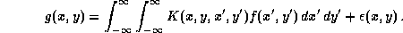

News
News
| Getting Started | Documentation | Glish | Learn More | Programming | Contact Us |
|
| VERSIONID |
News
|
illumination function
image
Image
image co-ordinate system
image enhancement
image formats
image reconstruction
inheritance
instantiation
instrumental polarization
intensity
interface
interference
interferometer
interlacing
Internet
Inter-process communications
invert
invisible distribution
IPosition
IPC
IsA
ISO
isoplanaticity assumption
See grading function.
1. In computer graphics, two-dimensional data representing a scene. A digital image is composed of pixels arranged in a rectangular array with a certain height and width. Each pixel may consist of one or more bits of information, representing the brightness of the image at that point and possibly including color information encoded as RGB triples. Images are usually taken from the real world via a digital camera, frame grabber or scanner. See also image formats.
2. In radio astronomy, the above definition is generalized to mean a discrete representation of a segment of the sky brightness distribution as intensities in a finite-volume, linear, rectangular, or hyper-rectangular array of pixels. The term also is used (less technically) to refer to the display of such data, either on a computer graphics display or as a television picture.
3. In mathematical use, the image (or range) of a function is the set of values of that function applied to all elements of its domain. So, if f : D -> C then the set f(D) = f(d) | d in D is the image of D under f. The image is a subset of C, the codomain.
In AIPS++, a class derived from Lattice which contains values of homogenous type arranged in a finite-volume, linear, rectangular, or hyper-rectangular structure. As well as the data values, the Image contains an image co-ordinate system to associate its pixel positions with astronomical Measures, usually related to position on the sky and to Doppler velocity. "Arbitrary" information can also be attached through the use of keywords, and the Image will normally have an attached processing log.
In AIPS++, an engine attached to an Image for turning positions within the Lattice to Measures, usually related to position on the sky and to Doppler velocity. An Image, for example a spectral line cube, may have more than one measure associated with its co-ordinate system.
Any process for improving the appearance, or suitability for a particular purpose, of an image using filtering, transformation or thresholding techniques, e.g. edge enhancement, histogram modification, median filtering, smoothing, sharpening, unsharp masking, false color or pseudo-color displays. In image enhancement there is no explicit effort to improve the fidelity of the reproduced image relative to some ideal form, as in the case of image reconstruction. Indeed, the goal is often to emphasize some feature of the image to draw a user's attention to that feature at the expense of fidelity to the natural "scene".
Many formats can be used to store digital images in files. In astronomy, the most widely-adopted standard is FITS format, which can retain the co-ordinate system, instrumental parameters and processing history of an image as well as the intensity data.
Common image formats outside astronomy include GIF, TIFF, JPEG, PCX and XBM.
Detailed documentation of FITS and other scientific data formats can be found in the Scientific Data Format Information FAQ, accessible under the FITS Home Page at http://fits.cv.nrao.edu/.
Information about other image formats is available in the Graphics File Formats FAQ at http://www.cis.ohio-state.edu/hypertext/faq/usenet/graphics/fileformats-faq/faq.html (Ohio State University).
(also image restoration). The attempted recovery of an image after it has undergone the distortion, blurring, etc., produced by some physical measurement and recording device, such as a camera, a radio interferometer array, or a tomography machine. The operation of many measurement devices can be adequately modeled by a linear Fredholm integral equation of the first kind. In the two-dimensional case, e.g., one assumes that the measurement g(x,y) is related to the undistorted image f(x,y) by the equation

(Often it is convenient to use the more compact, operator notation,
g = Kf +  .) The kernel K of the equation is called
the point spread
function. Measurement error and the error arising from any
simplifying assumptions are lumped together into the (x,y) term. Some
particularly well-behaved measurement systems can be adequately
modeled by a simple convolution equation, in which case K
is given by K(x,y,x',y')=h(x-x',y-y'). This is the case,
e.g., when a radio interferometer array such as the VLA is used to
observe a small 'unconfused' radio source; then g may be
identified with the dirty image and
h with the dirty beam. Or
when K, considered as a function of (x,y), is
given at each (x',y') by the delay beam for that position, the
equation models the bandwidth
smearing effect; as the bandwidth tends to zero, the convolution
model again becomes valid.
.) The kernel K of the equation is called
the point spread
function. Measurement error and the error arising from any
simplifying assumptions are lumped together into the (x,y) term. Some
particularly well-behaved measurement systems can be adequately
modeled by a simple convolution equation, in which case K
is given by K(x,y,x',y')=h(x-x',y-y'). This is the case,
e.g., when a radio interferometer array such as the VLA is used to
observe a small 'unconfused' radio source; then g may be
identified with the dirty image and
h with the dirty beam. Or
when K, considered as a function of (x,y), is
given at each (x',y') by the delay beam for that position, the
equation models the bandwidth
smearing effect; as the bandwidth tends to zero, the convolution
model again becomes valid.
Except in trivial cases, solution of the Fredholm equation always is
an ill-posed problem. Mild conditions on K and f
(the classical `Picard conditions' (see F.Smithies Integral
Equations, Cambridge Univ. Pr., London, 1958) ensure the
existence of (non-unique) solutions when is zero everywhere. But, because of the effect of measurement noise,
one usually does not seek an exact solution, but rather an approximate
solution-one which fits the data to within the measurement errors.
Uniqueness and regularity of the computed approximate solution are
obtained by imposing such constraints as known support,
non-negativity, and smoothness conditions. See regularization method. Also see H.C.Andrews and B.R.Hunt, Digital Image Restoration, Prentice-Hall, Englewood Cliffs, NJ,
1977 and phaseless
reconstruction.
In object-oriented programming, the ability to derive new classes from existing ones. A derived class ("subclass") inherits the instance variables and methods of the base class ("superclass"), and may add new instance variables and methods. New methods may be defined with the same names as those in the base class, in which case they override the original.
1. In object-oriented programming, producing a particular object from its class template. This involves allocation of a structure with the types specified by the template, and initialization of instance variables with either default values or those provided by the class's constructor function.
2. In unification, (as used in logic programming, type checking and type inference), binding a logic variable (type variable) to some value (type).
Any contamination of a polarization measurement by an instrument's response to an undesired polarization state. In radio interferometry, the instrumental polarization arises mainly from imperfections in the feeds and from plumbing leaks between the feeds and the receiver front-ends. One tries to remove the instrumental polarization by applying corrections derived from observations of calibration sources whose polarization properties are known.
1. In visual perception, one of the three basic parameters (hue, intensity, and saturation) which may be used to describe the physical perception of color. Intensity is a measure of the energy of the spectral distribution, at a given point in an image or scene, weighted by the spectral response of the visual system. Luminance is the energy of the physical spectrum, but not weighted by the visual response. Brightness sometimes is used synonymously with either term. See chromaticity.
2. In photometry, a measure, sometimes called specific intensity of the amount of radiant energy received per unit solid angle per unit time per unit area of a surface element orthogonal to the direction of propagation of the radiation.
3. In radio astronomy, a term often used much more loosely to mean either the flux density of an unresolved radio source or the surface brightness of an extended source. The normalization and the units must be determined from the context because of the looser usage.
1. In computing generally, the (hardware or software) devices, rules or conventions by which one component of a system communicates with another. Or, the means of communication between a user and the computer (see graphical user interface, WIMP, X Window System).
2. In object-oriented programming, the portion of a class which may be used externally, enforcing encapsulation.
1. In optics, the alternate reinforcement and cancellation between two wave fields with non-zero coherence, producing fringes.
2. In radio astronomy, either usage #1 or: unwanted signals from a man-made source or from a strong astronomical source such as the sun, interfering with the ability to detect signals from a desired astronomical target. Often called RFI (radio frequency interference) to distinguish this usage from #1.
In astronomy, any device for measuring small angles using the principle of interference. Optical astronomy has used three major classes of interferometers: the Michelson (phase) interferometer, the Brown-Twiss (intensity) interferometer and the Labeyrie (speckle) interferometer. In radio astronomy, the term is generally used to mean two separated antennas from which signals are combined and processed so as to extract intensity and/or phase relationships. Within AIPS++, it refers specifically to the combination of two (separated) receptors.
Storage or transfer of information other than in a "natural" sequence. Interlacing is commonly used in televisions and computer display screens. On an interlaced display, the electron beam first scans all the even numbered lines on the raster, then all the odd numbered lines, covering the whole frame in two scans. This doubles the vertical resolution without increasing the scan rate. The cost of this increased resolution is that any given pixel is refreshed only half as often. For an interlaced display to appear flicker-free, it may need a phosphor with a higher persistence.
(Note the capital "I"). The largest computer network in the world, a three level hierarchy composed of backbone networks (initially the ARPAnet, NSFNet, MILNET), mid-level networks, and stub networks. These include commercial (.com or .co), university (.ac or .edu) and other research networks (.org, .net) and military (.mil) networks and span many tens of thousands of physical networks reaching over ten million host computers around the world with various protocols including the Internet Protocol.
Bodies associated with running the Internet include the Internet Architecture Board) (IAB), the Internet Assigned Numbers Authority (IANA), the Internet Engineering and Planning Group, the Internet Engineering Steering Group (IESG), Internet Engineering Task Force (IETF), and the Internet Society (ISOC).
A way for two independent process to communicate. Typically in UNIX via shared memory, messages, or semaphores.
A method of the MeasurementModel is the opposite of predict(). Consider the A Matrix formalism: D = A S. Invert is the operation which, when applied to D, yields an estimate of S:
In the context of radio interferometry, a function f (or a generalized function-or distribution) whose Fourier transform F vanishes everywhere that the interferometer pairs have sampled the u-v plane. This term was introduced by R. N. Bracewell and J. A. Roberts (Aerial smoothing in radio astronomy, Austr. J. Phys., 7 (1954) 615-640). Also see principal solution.
For an actual interferometer, there exist fewer physically plausible invisible distributions than for an idealized interferometer. This is because each visibility sample is not a point sample of the Fourier transform F, but rather some kind of local average. By the Paley-Wiener theorem, if F is nontrivial and vanishes in some open neighborhood, then f cannot be of compact support, and hence it may be considered implausible.
In AIPS++, an ordered tuple of integers, one per axis, that specifies a particular value in a Lattice.
A term used for a class derived from another. For example, in AIPS++, an Array IsA Lattice. Compare HasA.
International Organization for Standardization: a voluntary, nontreaty organization founded in 1946, responsible for creating international standards in many areas, including computers and communications. Its members are the national standards organizations of 89 countries, including the American National Standards Institute (ANSI). According to ISO documents, the term "ISO" is not an acronym, but a pun on the Greek prefix iso-, meaning "same".
In the context of radio interferometry (the term is also used in optics), the assumption that over each element of an array all wavefronts arriving from different parts of the sky to which the interferometer pairs are sensitive are subject to identical atmospheric phase perturbations. A patch of sky over which the assumption is valid is referred to as an isoplanatic patch.
Approximate validity of the isoplanaticity assumption is a necessary condition for the success of calibration ( self-calibration, in particular) of radio interferometer data (from an earth-based array) if one is to rely on a model incorporating time-varying antenna/i.f. gains, one per antenna, whose arguments (or phases) are to include the atmospheric phase corruption. However, see F.R.Schwab, Relaxing the isoplanatism assumption in self-calibration; applications to low-frequency radio interferometry, Astron. J., 89 (1984) 1076-1081.
You could now go back to the:
Copyright © 1995,1996,1999,2000 Associated Universities Inc., Washington, D.C.
abridle@nrao.edu, 15 August 1996, 15:25 EDT